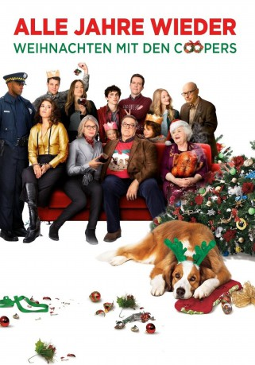
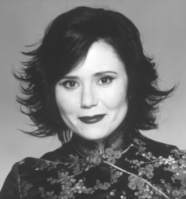

#6507 Alle Jahre wieder - Weihnachten mit den Coopers
Alternativ: Love the Coopers
 
 IMDB-Wertung: 5.7 / 10
IMDB-Wertung: 5.7 / 10  Metascore: 0
Metascore: 0 
Die Weihnachtszeit ist angebrochen und damit beginnen natürlich auch für die Familie Cooper die besinnlichen Feiertage. Im Kreise der liebsten Mitmenschen wollen sie den stressigen Rest des Jahres hinter sich lassen und entspannen. Zumindest sollte dies das Ziel sein. Bei dem alljährlichen Treffen der Generationen im Hause Cooper kann von Entspannung jedoch kaum die Rede sein, denn alle wollen ihre ganz eigenen Probleme vor den Verwandten verbergen, um die Stimmung nicht zu trüben Vor dieser Herausforderung stehen sogar die Gastgeber Charlotte und Sam deren Ehe zwar seit 40 Jahren hält, sich allerdings auf der Zielgeraden befindet. Dies sollen ihre Kinder aber natürlich nicht mitbekommen, weswegen an Weihnachten noch das Pokerface gehalten werden muss, bevor nach dem Ende der schönsten Zeit des Jahres allen die Wahrheit mitgeteilt werden kann.
Jahr: 2015
Dauer: 107 Minuten
FSK: 0
Land: USA Studio: LionsgateTonspuren:
Untertitel:
Auflösung: 720p (1280x536) Größe: 2631 MB
Genre: Komödie, Fantasy, Liebe, Weihnachten
Regisseur: Jessie Nelson
Drehbuch: Steven Rogers
Soundtrack:
Darsteller:
 Steve Martin als Rags
Steve Martin als Rags Diane Keaton als Charlotte
Diane Keaton als Charlotte John Goodman als Sam
John Goodman als Sam Ed Helms als Hank
Ed Helms als Hank-  Alex Borstein als Angie
- Timothée Chalamet als Charlie
- Maxwell Simkins als Bo
- Blake Baumgartner als Madison
 Amanda Seyfried als Ruby
Amanda Seyfried als Ruby Alan Arkin als Bucky
Alan Arkin als Bucky- Dan Amboyer als Handsome Young Man at Diner
 Marisa Tomei als Emma
Marisa Tomei als Emma- Scott Garan als Department Store Security Guard
- Olivia Wilde als Eleanor
- Mike Pusateri als Airport Bar Patron
- Jake Lacy als Joe
 June Squibb als Aunt Fishy
June Squibb als Aunt Fishy- Kanani Rose Rogers als Caroler / Angry Soprano
 Anthony Mackie als Officer Williams
Anthony Mackie als Officer Williams- Molly Gordon als Lauren Hesselberg
- Sylvia Kauders als Sara
- Krista Marie Yu als Lily the Florist
- Lev Pakman als Schnozzle Whitehead
- M.R. Wilson als Young Sam
- Keenan Jolliff als Brady
- Quinn McColgan als Young Charlotte, 12-14 Yrs
- Kristin Slaysman als Effie Newport
 Jon Tenney als Dr. Morrissey
Jon Tenney als Dr. Morrissey- Cady Huffman als Gift Shop Clerk
 Troy Bogdan als Airline Employee / Train Commuter , uncredited
Troy Bogdan als Airline Employee / Train Commuter , uncredited- Deborah Charity als Salon Stylist , uncredited
 Lloyd Crago als Airport Employee , uncredited
Lloyd Crago als Airport Employee , uncredited- Jamie Eddy als Extra , uncredited
 Mark Falvo als Shopper in Mall , uncredited
Mark Falvo als Shopper in Mall , uncredited- Joseph Faulk als Bartender , uncredited
- Sophie Guest als Young Ruby , uncredited
- Denny Hazen als Restaurant Patron , uncredited
- John W. Iwanonkiw als Mall Security / Shopper , uncredited
- Jennifer Jelsema als Perfume Lady , uncredited
 William Kania als Orderly , uncredited
William Kania als Orderly , uncredited Bettina Kenney als Billy Dawn , uncredited
Bettina Kenney als Billy Dawn , uncredited- Nicholas Luna als Fiancé , uncredited
- Laurie Mann als Nursing Home Cardplayer , uncredited
- Dan McCurry als Upscale Shopper , uncredited
 Tiffany Sander McKenzie als Train Station Commuter , uncredited
Tiffany Sander McKenzie als Train Station Commuter , uncredited F. Robert McMurray als Shopper , uncredited
F. Robert McMurray als Shopper , uncredited- Grayson Alexander Miller als Bar Patron , uncredited
- Kelly L. Moran als Angry Airlines Passenger , uncredited
 Phil Nardozzi als Driver / Shopper , uncredited
Phil Nardozzi als Driver / Shopper , uncredited- Frankie Palombi als Airline Employee / Gate Agent , uncredited
Datei: X:\2015(A-F)\Alle Jahre wieder - Weihnachten mit den Coopers (2015, FSK0, 1280x536).mkv seit 05.07.2017
Festplatte: HD 2015(A-Z)
 Es gibt insgesamt 143 Filme in der Gruppe '2015(A-F)'
Es gibt insgesamt 143 Filme in der Gruppe '2015(A-F)'